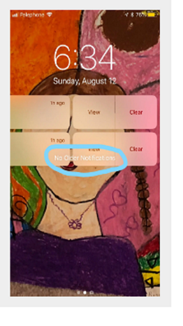

Curso de Q&A - Clase 03 - CODERHOUSE
Defectos en el Testing
Ambientes de desarrollo y builds
Es un espacio controlado en una computadora donde pueden escribir código,
probar nuevas funciones y corregir errores sin afectar el software que ya
está en uso por los usuarios finales. Comprendemos que espacios virtuales
serán computadoras, servidores, máquinas virtuales, etc.
Los 5 Ambientes:
-
Local (Este es tu propio espacio de trabajo personal donde desarrollas y
pruebas el software en tu propia computadora.)
-
Desarrollo (Es el ambiente donde los programadores trabajan juntos para
construir y mejorar el software, implica la primera etapa de subida de
código del proyecto.)
-
Staging (Es el primer ambiente donde los QA realizan pruebas, debido a
que posee cierta estabilidad que no se asemeja al ambiente productivo.)
-
Pre-producción (Este ambiente es una etapa intermedia entre las pruebas
y el lanzamiento final y donde se realizará el UAT para la integración.)
-
Producción (Este es el ambiente en el que el software se hace accesible
para los usuarios finales.)
¿Cuál es la diferencia entre un error, defecto y fallo?
Error: Es una acción incorrecta cometida por una persona al escribir
código.
ejemplo:
- Error en la lógica de la programación.
- Requerimiento mal especificado.
Defecto (BUG): Es un problema en el código que causa un comportamiento no
deseado en el software.
ejemplo:
-
Un módulo de registro de usuarios tiene mala configuración en la función
de conexión a base de datos.
-
Una función de login cuenta con las variables de usuario y contraseña
declaradas incorrectamente.
Fallo: Es cuando un defecto provoca que el software no funcione como se
espera durante su uso.
ejemplo:
-
Cuando intentas enviar un formulario sin completar un campo obligatorio
y el sistema no muestra un mensaje de error indicando que el campo es
requerido.
-
Cuando envías un formulario y el sistema muestra un mensaje de
confirmación de envío, pero no se enviaron los datos.
Defectos, causas raíz y efectos:
Se pueden analizar los defectos para identificar sus causas raíz, con el
propósito de reducir la ocurrencia de defectos similares
Técnica de los 5 Porqués
Es una técnica para identificar las causas raíz de un problema al hacer
preguntas iterativas sobre por qué ocurrió el defecto, repitiendo la
pregunta "¿por qué?" hasta llegar a la causa.
Clasificación y reporte de defectos
Registrar defectos
Dado que uno de los objetivos de la prueba es detectar defectos, estos
deben registrarse. La forma en que se registran los defectos pueden
variar, según el contexto del componente o sistema que se está probando,
el nivel de prueba, etc. Cualquier defecto identificado debe ser
investigado y debe tener un seguimiento y debe tener una clasificación
hasta su resolución.
Proceso de gestión
Para gestionar todos los defectos hasta su resolución, la organización
debe establecer un proceso que incluya un flujo de trabajo y reglas de
clasificación. Este proceso debe ser acordado con todo el equipo. El
equipo que participa incluye diseñadores, desarrolladores, testers y
propietarios de producto En algunas organizaciones, el registro y
seguimiento suele ser muy informal.
Criticidad y urgencia
criticidad: es la medida del alcance del daño potencial (nosotros los QAs
establecemos)
urgencia: Es la rapidez con que se requiere una resolución
Tipos de defectos
-
Defectos visuales (también conocidos como UX/UI): defectos visuales
relacionados con la usabilidad de la plataforma.

-
Defectos componente: son específicamente cuando algo particular de la
plataforma no está funcionando como corresponde. Ejemplo: no deberia
enviar el formulario con caracteres numericos en el campo nombre.
-
Defectos contenido: están medianamente relacionados con los defectos
de UX/UI, pero se desprenden porque comprenden contenido
específicamente en la plataforma. ejemplo: el contenido de legales
está desactualizado con fechas del año anterior.
-
Defectos disruptivos: El más grave de todos, que se da a causa de una
nueva implementación que hace que toda la plataforma se rompa.
Reporte de Defecto(bugs)
El reporte de defectos es nuestra herramienta principal para demostrar el
trabajo realizado.
¿Quién define el reporte del bug?
Es un trabajo de equipo que se realiza previo al comienzo del ciclo del
desarrollo. El equipo comprende a los desarrolladores, tester, product
owners, diseñadores, etc.
Algunos de los datos que NO pueden faltar son:
- Título
- Resultado esperado
- Resultado obtenido
- Sistema utilizado (sistema operativo o equipo físico)
- Nivel del bug
- Captura de pantalla del error (evidencia)
Ejemplo de Reporte de Defectos: